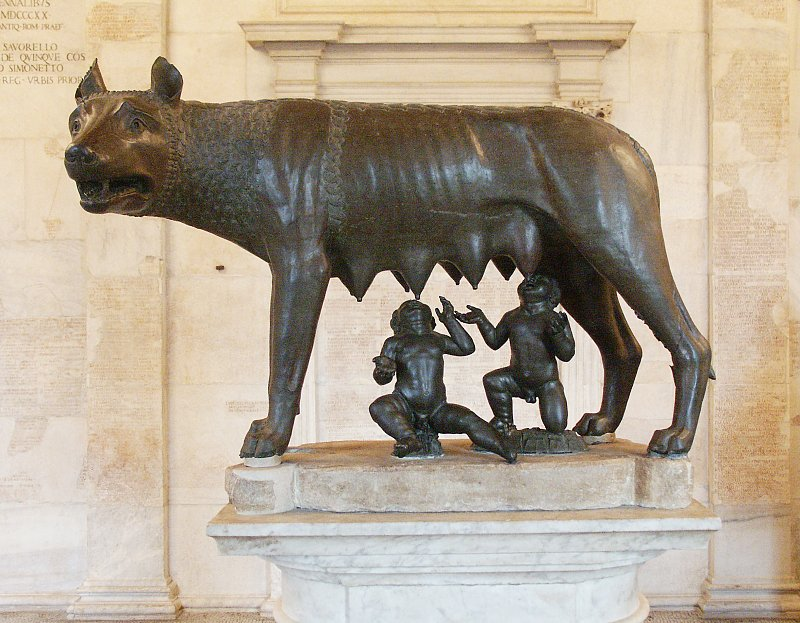
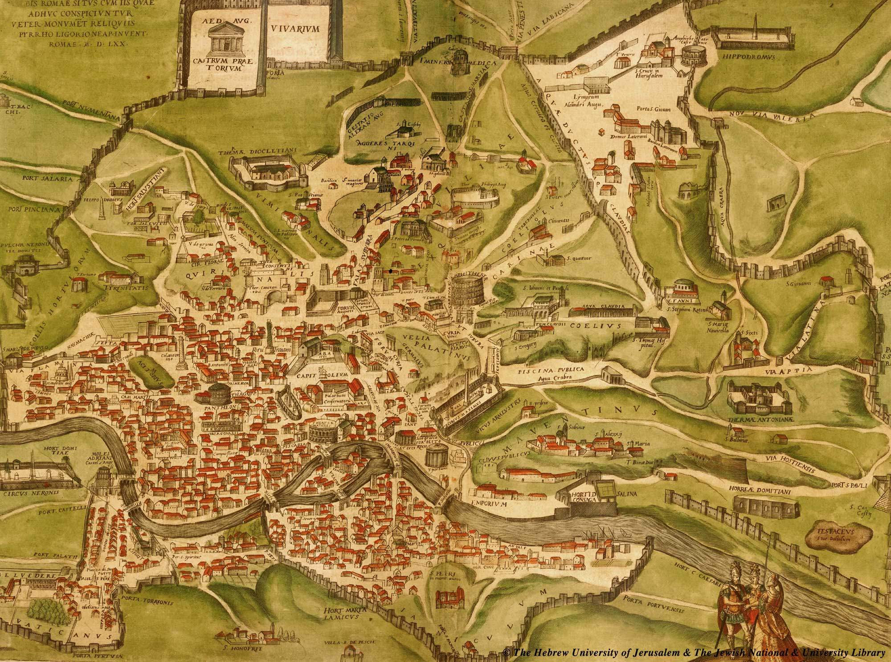
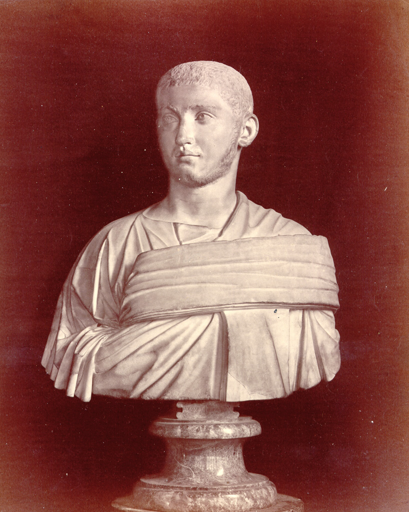

 Roma-cetatea aşezată pe şapte coline - a învins timpul şi se arată lumii strălucitoare. Roma a înzestrat patrimoniul culturii universale si al artelor lumii cu valori nepreţuite ce au făcut-o nemuritoare. Potrivit tradiţiei, Roma a fost întemeiată în anul 735 î.e.n. de Romulus şi Remus; însă cea mai veche aşezare descoperită aici datează, potrivit materialelor arheologice, de prin secolul al X-lea î.e.n. De la sfârşitul secolului al VI-lea î.e.n., Roma a devenit centru politic al republicii sclavagiste romane, iar din secolul I î.e.n. al Imperiului roman. În anul 64, în timpul domniei lui Nero, o mare parte a oraşului Roma a fost mistuită de incendiu. Reconstruită în timpul Flavilor, Roma a fost mărită, mai ales sub împăraţii Traian, Adrian şi Caracalla. Mutarea capitalei imperiului la Constantinopol (330), împărţirea imperiului (395), căderea imperiului roman de apus (476) şi migraţiunea poparelor au dus la decăderea oraşului.
Imperiul roman a fost unul dintre cele mai puternice şi mai mari state ale lumii antice. Cea mai veche perioadă din istoria Romei este cunoscută în istorie sub denumirea de ,,perioada regalităţii”, care ar fi durat, potrivit tradiţiei, aproximativ două secole şi jumătate (753-509 Î.C.). Organizarea socială a Romei în această perioadă era democraţia militară; locuitorii Romei (populus romanus) erau împărţiţi în trei triburi a căte zece curii, fiecare curie având căte zece ginţi. Principalele instituţii ale statului roman incipient erau adunarea bătrânilor (senatus), adunarea poporului pe curii (comitia curiata), care alegea pe toţi magistraţii şi regele (rex), ales de adunarea poporului. În cursul evoluţiei sale din această perioadă populaţia Romei s-a împărţit în patricieni (aristocraţia gentilică) şi plebei (reprezentanţi ai triburilor aservite), amândouă categoriile fiind formate din oameni liberi, sclavia, incipientă, având un caracter patriarhal. În secolul al VI-lea Î.C. Roma a cunoscut o perioadă de dominaţie politică etruscă, care a influenţat tradiţia, instituţiile politice şi arhitectura secolelor următoare.
La sfârşitul secolului al VI-lea Î.C. (potrivit tradiţiei romane în anul 509 Î.C.), la Roma s-a instituit republica, autoritatea regală fiind înlocuită prin aceea a doi magistraţi, numiţi la început praetori, iar apoi consuli, aleşi dintre patricieni, de către adunarea poporului. Senatul, alcătuit din patricieni, a devenit organul suprem al puterii în republica romană, dând acesteia un caracter net aristocratic. În cursul unui îndelungat proces istoric (sec VI-III Î.C.) s-au efectuat importante reforme sociale, care au pus bazele organizării statului roman în forma cunoscută de istorie. Principalul conţinut al istoriei interne a statului roman în perioada republicană timpurie îl constituie lupta plebeilor cu patricienii pentru pământ şi pentru egalitate în drepturi politice. Lupta dintre patricieni şi plebei încheiată în 287 Î.C. a dus la importante modificări în structura socială a statului roman; populaţia liberă a Romei s-a împărţit în caste (ordines), în fruntea cărora era noua aristocraţie (nobilitas), alcătuită din vârfurile patriciene şi plebeiene.
În a doua jumătate a secolului al V-lea Î.C., Roma dispunând de o excelentă organizare militară, a iniţiat o politică expansionistă în Latium, apoi în Italia. În urma războiului cu coaliţia oraşelor latine (340-338 Î.C.), care i-a adus hegemonia în Latium şi a războaielor cu samniţii (343-341, 327-304 şi 298-290 Î.C.), Roma a cucerit întreaga Italie centrală de pe ambii versanţi ai Apeninilor. După cucerirea Italiei centrale Roma a ajuns în conflict cu oraşele greceşti din sudul Italiei. În urma războiului cu regele Etirului, Pyrrhos (280-275 Î.C.), şi a asediului Tarentului (272 Î.C.), Roma a ocupat toată Italia de sud. După ocuparea Italiei şi organizarea ei din punct de vedere politic, social-economic şi administrativ, interesele Romei s-au ciocnit de cele ale Cartaginei. Lupta pentru supremaţie în bazinul mediteranean a dus la cele trei războaie denumite, războaie punice. În urma primului război punic, Roma a obţinut Sicilia, dar forţa economică, politică şi militară a Cartaginei rămânea aproape intactă. În cursul celui de-al doilea război punic armata cartagineză, condusă de Hanibal, a invadat Italia, pricinuind armatei romane înfrângeri zdrobitoare la Lacul Trasimene şi mai ales la Cannae. Dar tactica temporizatoare elaborată de Fabius Cunctator, precum şi campaniile din Spania şi Africa conduse Publius Cornelius Scipio, au hotărât soarta războiului; Cartagina a suferit o grea înfrângere la Zama şi a pierdut în favoarea Romei toate posesiunile de peste mări. În urma celui de-al doilea război punic Roma a obţinut hegemonia în bazinul apusean al Mării Mediterane şi şi-a îndreptat atenţia spre răsărit (unde ocupase Iliria). În urma a trei războaie Macedonia a fost înfrântă şi supusă. După înfrângerea unei mari răscoale antiromane (148-149 Î.C.) Macedonia a fost transformată în provincie romană, iar în 146 Î.C., după înfrângerea răscoalei Ligii Aheene oraşele greceşti au fost subordonate provinciei romane Macedonia. În acest timp, Cartagina s-a refăcut din punct de vedere economic; un nou război, al treilea război punic (149-146 Î.C.), provocat de romani, a avut drept rezultat zdrobirea Cartaginei (care a fost dărâmată şi includerea teritoriilor acesteia în provincia romană Africa.
Hartă ilustrată a Romei Antice
După consolidarea stăpânirilor în provincia Balcanică şi după zdrobirea Cartaginei, romanii au început ofensiva pentru cucerirea teritoriilor asiatice. În 129 Î.C., regatul Pergamului şi posesiunile sale au fost transformate în provincie romană; aceeaşi soartă a împărtăşit-o Bithynia în 75 Î.C.. În Asia Mică rămânea liber regatul Pontului, care sub conducerea lui Mitridate al VI-lea Eupator a închegat în jurul lui o vastă uniune politică îndreptată împotriva Romei. În urma a trei războaie Roma a înfrânt pe Mitridate, ocupând toate teritoriile stăpânite sau controlate de acesta. Profitând de puternica criză politică a statelor elenistice, romanii au înfrânt şi au transformat în provincii romane statul Seleucizilor (Siria) (64-63 Î.C.) şi statul Ptolemeilor (Egiptul) (30 Î.C.), Roma împunându-şi astfel hegemonia şi în bazinul răsăritean al Mării Mediteraneene.
În secolele II-I Î.C., ca urma a transformării Romei într-un mare stat maritim, s-au dezvoltat comerţul, capitalul financiar şi cămătăresc şi a crescut rolul cavalerilor în viaţa politică şi socială a statului. Spre sfârşitul secolului I Î.C. Roma devenise unul dintre cele mai mari şi mai puternice state ale lumii antice. Creşterea imensă a numărului de sclavi în urma războaielor de cucerire şi introducerea pe scară largă a muncii acestora în producţie au marcat generalizarea modului de producţie sclavagist la Roma. Consecinţele principale ale acestui fapt, eliminarea treptată a producătorilor liberi, concentrarea pământului şi formarea latifundiilor, precum şi ascuţirea contradicţiilor sociale au provocat o largă mişcare socială pentru înfăptuirea unei reforme agrare, condusă de fraţii Caius şi Tiberius Gracchus. În secolele II-I Î.C. au avut loc puternicele răscoale ale sclavilor din Sicilia şi răscoala condusă de Spartacus. În acelaşi timp s-au răsculat şi aliaţii italici ai Romei care, deşi înfrânţi au obţinut cetăţenia romană. Mişcarea socială a gracchilor, răscoalele sclavilor, războiul aliaţilor, complotul lui Catilina au fost semne ale crizei politice şi sociale. Încercând să rezolve criza, conducătorii armatei, ai cavaleriei şi ai plebei, Pompei, Crassus şi Cezar s-au unit formând primul triumvirat (59 Î.C.). Lupta pentru putere a luat forme ascuţite. După ce în 52 Î.C. Pompei a fost ales consul fără coleg, instituind în fapt dictatura, Cezar a trecut Rubiconul (49 Î.C.) în fruntea armatei cu care cucerise Galia, a ocupat întreaga Italie, l-a înfrânt pe Pompei şi pe partizanii acestuia devenind conducător unic al statului roman. Senatul l-a numit pe Cezar dictator pe termen nelimitat, tribun pe viaţă şi cenzor. Reformele înfăptuite de Cezar au netezit calea instaurării imperiului. Lupta pentru putere, care a continuat şi cu mai multă violenţă după asasinarea lui Cezar (44 Î.C.) s-a sfârşit după un lung război civil cu instituirea principatului de către Octavian August (27 Î.C.).
În timpul principatului s-a întărit proprietatea funciară mijlocie şi s-au dezvoltat viaţa orăşenească, meşteşugurile şi comerţul. În secolul I Î.C. şi I D.C. şi mai ales în perioada lui August (numită şi epoca de aur a artei şi literaturii romane), cultura romană a atins apogeul. Cele mai remarcabile personalităţi ale epocii au fost oratorul Cicero, poeţii Virgiliu, Horaţiu, Ovidiu, istoricii Salustiu, Cezar, Trogus, Pompeius, Titus Livius, Tacit, Suetoniu, naturalistul Pliniu cel Bătrân. O caracteristică importantă a perioadei I-II D.C. a fost întărirea procesului de romanizare a provinciilor unde locul vechilor rânduieli a fost luat de cultura şi civilizaţia superioară a Romei şi creşterea rolului provincialilor în viaţa imperiului. Traian (98-117), primul provincial devenit împărat, i-a înfrânt pe daci în două campanii sângeroase (101-102 şi 105-106), transformând cea mai mare parte a Daciei în provincie romană. În secolul al III-lea Imperiul roman a intrat în criză; pe plan politic aceasta s-a manifestat în desele schimbări de împăraţi, în urma războaielor civile dintre pretendenţi, în slăbirea rolului aristocraţiei senatoriale, în creşterea rolului politic al armatei, în tendinţele unor provincii de a se rupe de imperiu (Galia, Hispania, Britania şi regatul Palmyrei) şi în răscoale ale coloniilor şi populaţiilor supuse. În sec. al III-lea sunt remarcabile domniile împăraţiilor Septimius Sever, Aurelian şi Diocleţian. În timpul lui Aurelian administraţia romană a părăsit Dacia, sub presiunea goţilor şi a dacilor liberi. Constantin cel Mare (306-337) a continuat reformele sociale şi politice ale lui Diocleţian; el a împărţit imperiul în patru prefecturi (Galia, Italia, Iliria şi Orientul), a mutat capitala la Constantinopol, oraş clădit de el. În anul 313 a dat edictul de toleranţă în favoarea creştinismului. Dar, sfâşiat de luptele interne pentru putere, de creşterea luptei de clasă, de atacurile poparelor din afară, Imperiul roman nu mai putea să revină la vechea lui strălucire. La sfârşitul sec. al IV-lea, Theodosius (379-395) a realizat ultima reunire a imperiului sub o singură autoritate. După moartea sa, imperiul s-a împărţit definitiv în formaţiunile politice cunoscute sub numele de Imperiul roman de apus şi Imperiul roman de răsărit.
În anul 410 Roma a fost ocupată şi jefuită de vizigoţi, conduşi de Alaric şi în 455 de vandali conduşi de Genseric. În anul 476 ultimul împărat roman, Romulus Augustus, a fost detronat de Odoacru, comandantul mercenarilor germani şi pe teritoriul Italiei s-a constituit primul regat barbar. Imperiul roman de răsărit, adaptându-se, datorită unor condiţii speciale, dezvoltării istorice, s-a transformat, în urma unor procese complexe, într-un stat feudal cunoscut sub numele de Imperiul Bizantin, care a continuat să existe până în secolul al XV-lea. Colosseum (70-80) este cunoscut sub această denumire datorita unei statui gigantice a Împăratului Nero care se afla în apropierea sa, dar adevaratul său nume este Amfiteatrul lui Flavian. In el se desfăşurau luptele dintre lei si creştini, precum şi alte spectacole fiind una din cele mai cunoscute piese de arhitectură din lume.
Lucius Domitius Aurelianus (n. 9 septembrie 214, Moesia, Panonia – d. 275, Çorlu, în apropiere de Byzantion), cunoscut drept Aurelian, a fost un împărat roman (270–275).